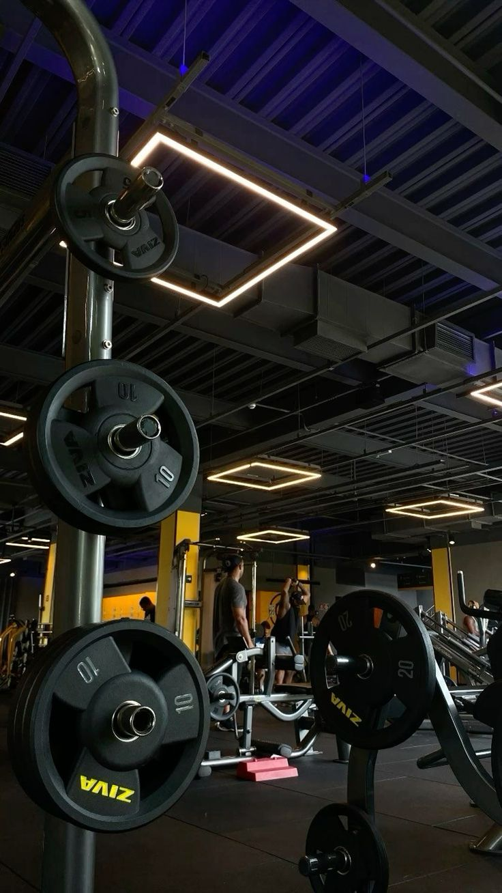
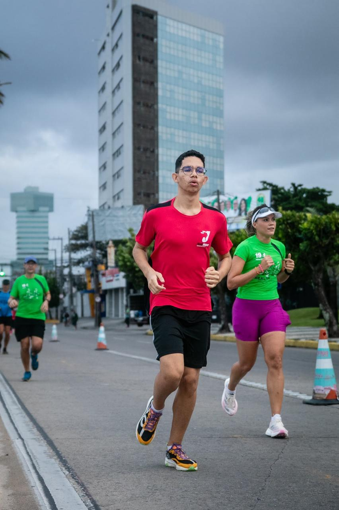
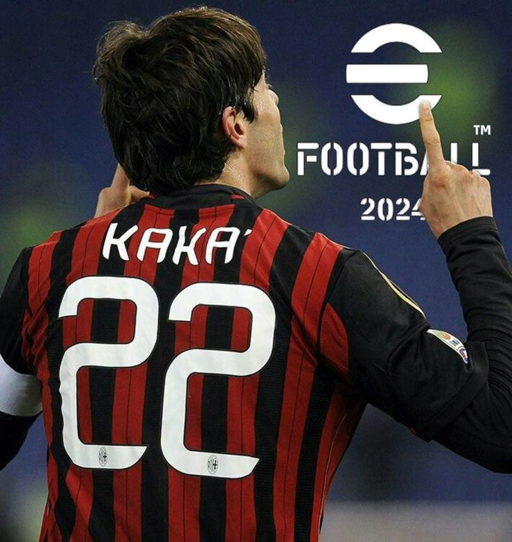
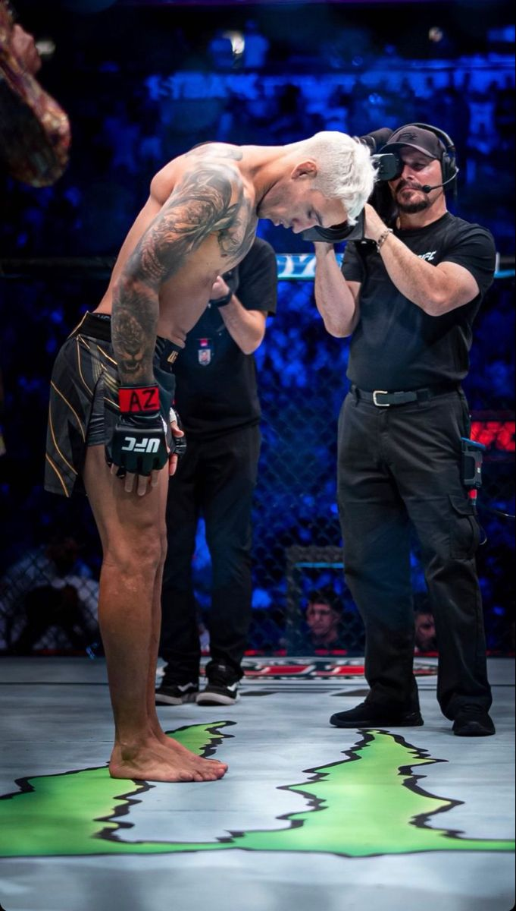
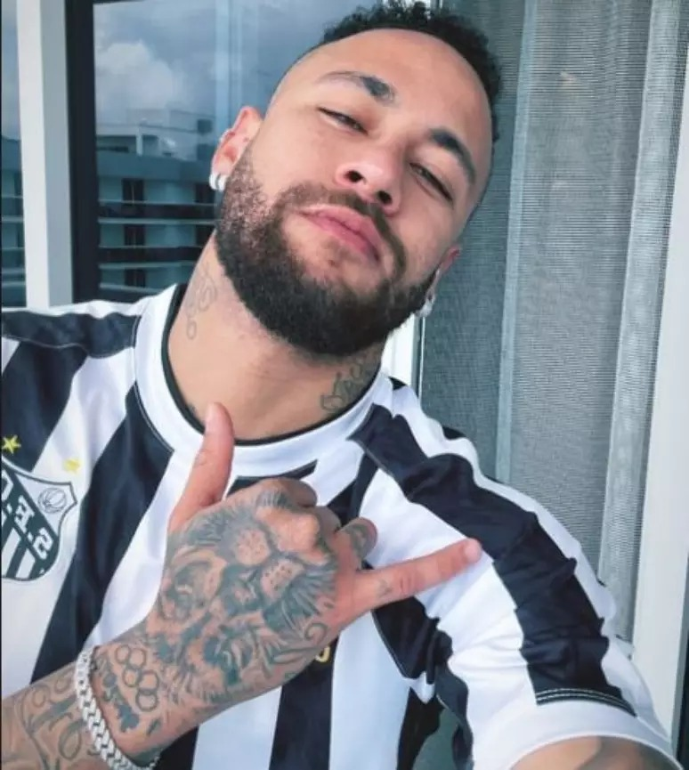

Vídeo games me fascinam pelas histórias imersivas, desafios e diversão que oferecem.
Ver MaisAdoro dirigir pela sensação de liberdade e controle, especialmente em viagens longas ou estradas tranquilas.
Ver Mais
O piano é uma paixão por ser um instrumento expressivo e capaz de criar músicas emocionantes.
Ver Mais
-Lucas.jpg)

Para mim é uma forma de se expressar através da arte, é uma ótima terapia e aprendizado de paciência.
Ver Mais
A Arte Marcial me ensinou muitas coisas, dentre elas , ter disciplina,foco, respeito e confiança.
Ver Mais
É uma ótima forma de diversão e entretenimento, jogar fica ainda melhor com os colegas.
Ver Mais
Desde sempre joguei futebol, um ótimo esporte que ajuda no controle do ar e no bem estar.
Ver Mais
No meu tempo livre finais de semana às vezes eu pedalo em grupo , ajuda na melhora da saúde cardiovascular, melhora saúde mental e melhora as habilidades cognitivas.
Ver MaisEu cresci numa época em que ainda se passavam em Tv aberta os melhores desenhos animados, e pra mim este é o mais incrível e memorável na cabeça de muitas pessoas. Dragon Ball Z foi e é com certeza, uma das melhores formas de definir a infância de alguém. Quando se assiste esse desenho na sua infância, você já sabe que valeu a pena ser criança.
Ver Mais
Sport Club do Recife, um time genial que atravessa gerações de torcedores, e um time no qual tenho orgulho de dizer que é meu time do coração.
Ver MaisFar Cry 3 é o meu jogo favorito da saga, e pra mim é um dos maiores lançamentos da Ubisoft junto com Assasin's Creed Black Flag. Ambientação incrível, vilão bem trabalhado, e história nostalgicamente memorável.
Ver Mais
Aerosmith, uma das minhas bandas de rock favoritas. Estes 5 caras formaram esta lendária banda no ano de 1970 em Boston, e ela durou até este ano de 2024, infelizmente pela falta de saúde do vocalista Steven Tyler que não consegue mais cantar extraordinariamente como antes. Foram mais de 50 anos de banda em atividade!! Um das bandas que durou mais tempo na história. Este álbum deles é o Get Your Wings, de 1974.
Ver Mais
GTA: San Andreas, meu primeiro contato com essa obra-prima de game, foi quando eu tinha uns 10 anos, história sensacional e uma jogabilidade que vai muito além do comum pra um jogo que fez 20 anos no mês passado. Um dos meus jogos favoritos com toda certeza.
Ver Mais
The Last of Us é um jogo de ação-aventura e sobrevivência desenvolvido pela Naughty Dog e publicado pela Sony Computer Entertainment. Ele foi lançado exclusivamente para PlayStation 3 em 14 de junho de 2013.
Ver MaisO taekwondo foi criado na Coreia há mais de 2000 anos. A prática marcial foi desenvolvida como técnica de defesa durante a dinastia Silla. Os praticantes da luta realizam movimentos tanto com os pés quanto com as mãos. O combate é feito em uma área de 8 m² com duração três rounds de dois minutos.
Ver MaisLeague of Legends é um jogo eletrônico do gênero multiplayer online battle arena (MOBA) desenvolvido e publicado pela Riot Games, foi lançado em outubro de 2009.
Ver MaisKimetsu no Yaiba, também conhecido pelo título em língua inglesa Demon Slayer é uma série japonesa de mangá shōnen escrita e ilustrada por Koyoharu Gotōge.
Ver Mais
O Sport Club do Recife é um clube brasileiro de desportos, situado no bairro da Ilha do Retiro, cidade do Recife, estado de Pernambuco. Campeão brasileiro de 1987 e da copa do Brasil de 2008.
Ver MaisO futsal é uma modalidade esportiva derivada do futebol realizada em uma quadra de cimento ou de madeira.
Ver MaisA academia é um local de prática de atividades físicas e exercícios, com o objetivo de promover a saúde e o bem-estar dos seus frequentadores.
Ver Mais
Cinema é a arte de produzir filmes e a forma como eles são projetados, criando a impressão de movimento no cérebro.
Ver Mais